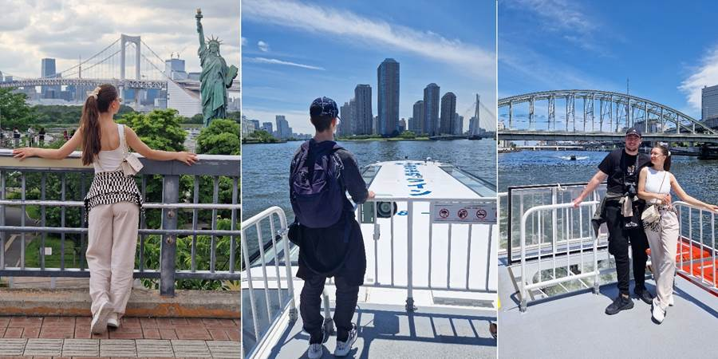
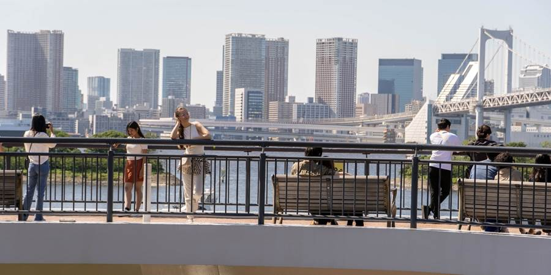
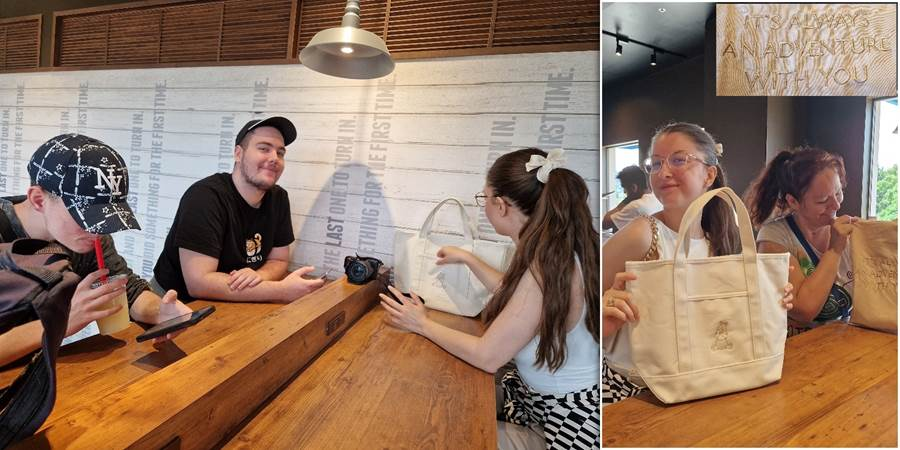
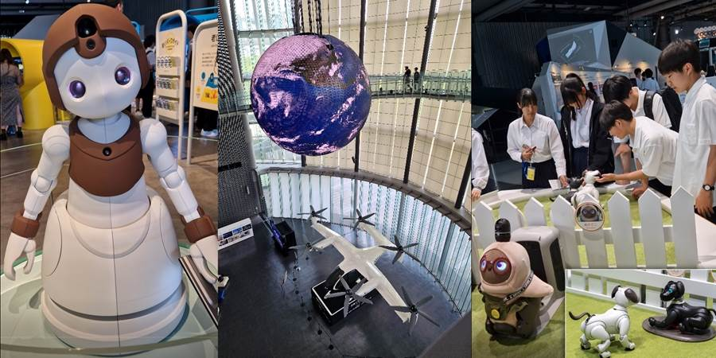
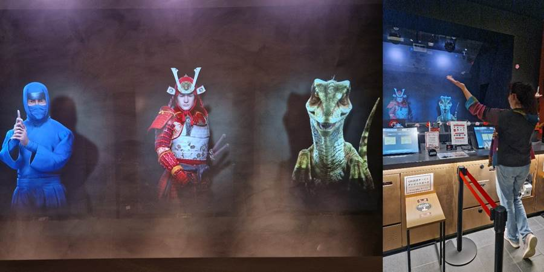
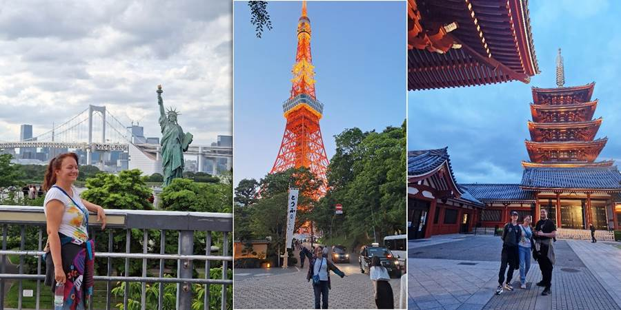
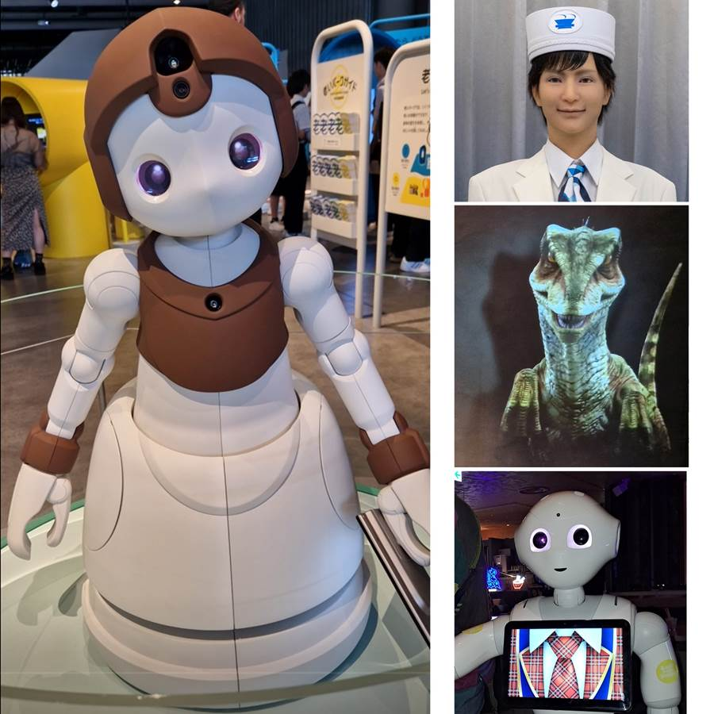

Dan trinaesti: Seks hotel, leteći auto, hologrami i trend seter
Poslednji dan, Tokio. Rešili smo da idemo u muzej nauke i tehnike Moraima kad smo već u Japanu.
Kako u svakom gradu volimo da se vozimo po reci, našli smo brod koji povezuje našu Asakusu gde je sex hotel sa Odaibom, baš što nam treba. Od našeg kraja do muzeja. Reka ne može da izneveri.
 Posebno se razgalili što opet vidimo zgradu govno. Gomila mostića.
Odvela sam decu u sex hotel. Ne samo da sam odvela nego smo i prespavali tamo. Ali da krenem iz početka.
Reka, mir, srećni čekamo brod, kad kažu meni deca: Nismo hteli da te razočaramo, u fazonu da ti rušimo Sneška, ali onaj sinoć smeštaj je za prostitutke i sex za noć, a tebi je od svega smetao samo duvanski dim i pepeljara sa upaljačem?
Kako nisi primetila? Kako nisam? Za sto godina mi ne bi palo na pamet da to postoji u Japanu. A ne da može da se rezerviše na bookingu.
Zezaju oni mene, a tako si ponosno pokazala taksisti, to je naš hotel. Još taksista znao hotel kad sam rekla ime hotela, gde da nas vozi, što me krajnje začudilo jer ne znaju ni osnovne znamenitosti gde su, nego traže adresu.
Uglavnom pink svetla na ulazu. Šali se Kristina, možda je samo za devojčice. Kažu ušao transvestit ispred nas. Videla ga nisam.
U sobi nisam mogla da nađem prekidač za svetlo. Videla neku veliku tablu sa dugmićima na uzglavlju. Mislim se čemu služi i sa stotim delom mozga pomislim, možda je klima, jer mi nije ni važno.
Ogroman krevet, gledam samo kako da se sručim u njega. Oni dugmići su bile razne verzije svetla, za atmosferu. Roza, crvena, rotirajuća, razne varijante. Prozori zamandaljeni.
Luka odvalio drveni prozor da bi otvorio stakleni da izluftira. Zamandaljeni prozori dabome, da se ne vidi šta se tu unutra radi.
U fiokama kondomi. Kanta za đubre pored kreveta. Seksi magazini kod recepcije. Recepcioneru vidiš samo stomak gde je rupa u zamućenom staklu na recepciji. Da se ne kompromituju gosti.
Ništa ja to primetila nisam osim smrada cigara.
Kad smo stigli do Odaibe odlučili smo da odradimo ono najvažnije ili što bi moja baba Vasa rekla: “Doručak ti je sinko najprešniji”. Išli smo na takose u tržnom centru.
Naišli smo na Dizni prodavnicu. Kristina i ja smo kupile mečing torbe Vini Pu. Na mojoj je nešto i pisalo al nisam čitala. Nešto avantura. Ok.
Kad Kristina reče: sviđa mi se natpis. Ja pogledam a ono: “It is always adventure with you”. Kaže Luka: “Eto, stoji ti.”. A, ja? Opet velika do neba.
U tržnom centru su bili i kučići za usvajanje. Gledam kako im je sve tako čisto, a ono kučići nose mini pelene.
Počeo i Petar da govori “arigato gazaimaaas” (hvalaaa).
Moraima muzej. Muzej nauke i tehnike.
Kako bismo pogrešili da nismo došli. Najviše mi se dopala postavka robota, naravno. Ima i kuca robota za maženje. I fokica za bolesnike. Imaju noge robota čoveka koji trči, konja koji trči. Pokreti odrađeni do savršenosti. Velike veštačke oči što trepcu. Unutrašnjost svemirskog broda... I leteći automobil, automobil budućnosti. Podseća na veliki dron.
U povratku smo otišli do hotela gde su recepcioneri hologrami. Meni se dopalo.
Šećkali smo se po Senso ji, meni peti put, i hajmo kući.
Planirala sam da budemo na aerodromu tri sata pre poletanja, pošto im je sve ogromno, da se snađemo.
Lepo smo imali vezu do aerodroma za 15 minuta bez presedanja. Kad stiže nam odmah metro.
Gle, možda ona žena, što nas je uputila, nije mislila da ćemo mi tako brzo sve da obavimo, kupimo karte i siđemo.
A i gde ima da ide metro sa tog perona osim na tu stranu. Kakva glupost. Kod njih se metro linije ihaj granaju na stanicama.
Uglavnom ušli u metro sa presedanjem. Nije strašno. Osim što je išao naokolo.
Otišli na terminal 2, kao što piše na bording karti. Sve srećni kako smo sve brzo našli.
Ali nigde naše Lot avio kompanije. Pitamo jednog čoveka, kaže oni su terminal 1.
Terminal 2 što sam videla napisano je na bording karti Varšava, Beograd. Da sam otvorila pogrešni bording na telefonu, nismo videli ni ja, ni Kristina ni čovek koji je pitao a svi smo složno klimali glavama i potvrđivali da piše terminal 2.
I pisalo je. Samo ne za Tokio. Nego za Varšavu.
Terminal 1, to je druga stanica vozom. Panika.
Trči napolje. Ima opcija i voz i autobus i taxi do terminala 1. Trči u taksi.
Jena imam još samo 1000 što je oko 700 dinara. Ne znam da li prima karticu, neki i ne primaju.
Prima, dobro je. Nema mi kartice. Rondaj, rondaj, nema. Sreća ima Luka. Tu nađem i moju.
Vožnja 800 jena, platim kešom i trči.
Ušli u zgradu, nigde nikoga. Prodavnice zatvorene. Tek po koji čistač.
Niko pojma nema, naravno, gde mi treba da idemo. Levo ili desno. Sever ili jug. Otkud znam.
Na bording karti to ne piše. Ako propustimo let u gadnoj smo nevolji.
Ajd trči na jednu nasumičnu stranu. U jednom momentu piše “All gates”. Lakše se diše.
Prošli kontrole. Na jednu stranu gejtovi od 11 do 47. Naš je naravno 47. Na kraju, krajeva.
Trk po onim horizontalnim pokretnim trakama kojih ima milion.
Stigosmo na gejt sat vremena pre polaska. Pola sata pred ukrcavanje. Uh.
Stigla da otrčim još nazad do prodavnice gde sam krajem oka dok smo trčali videla intersantan sake što prodaju u burićima za Duška.
Stigli u Varšavu. Ovaj let mi čak nije ni teško pao. Prekopirala Petrov fazon da izvučem stočić, stavim ruksag na njega pa jastuk pa glavu. Tako sam uspela da spavam. Izlazak sunca smo videli ali auroru više ne.
Skoknula sam do Varšave na tranzitu.
Pevala sa taksistom Poljakom na sav glas pesmu: “Tamo je Srbija”. Reče on zna jednu srpsku pesmu i raspevao se a ja mu se pridružila dirnuta, šta ću.
Na gejtu nema baš ljudi. Poučena iskustvom iz Rumunije, da proverim da nisu ušli u avion a ono nama sad ovde promenjen gejt. Sreća sve prošlo ok i evo nas kući. Čak su me pustili sa sakeom iz Japana koji ima preko 100 ml u Varšavi na aerodromu.
Petar kad je bio mali, bio je na snimanju Pinkovih zvezdica, kao plesač. Lepo sam ga upasala i ostavila i otišla u publiku. Kad, Petru se pripiškilo, otišao u WC i upasao samo pola košulje. Pola viri. Trener nije primetila i pustila ga na scenu. Danas je tako moderno. Petar je trend seter. Postavlja trendove. Njegova figura iz igrice koju je doneo iz Japana ima pola košulje upasano a pola ne. Čak i istu kravatu i pantalone. Petrova kopija sa Pinkovih zvezdica. Neverovatno.

Ne propustite sledeću avanturu!
Kad Sandra krene u novi kraj sveta, vaš inbox prvi sazna. Prijavite se i stižu vam sve nove priče mejlom.